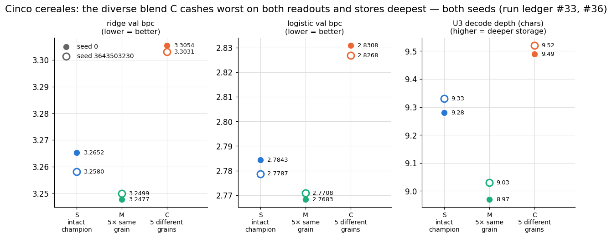

Heterogeneous Reservoir Ensembles Decode Deeper and Predict Worse Than Homogeneous Ones at Matched Width
download whitepaper (pdf)
- registered 2026-08-12
- run ledger #33, #36
- 2 seeds × 3 arms, zero reversals
- replicated before publication
- promoted 2026-08-12
Abstract
An open-ended design brief became a controlled test of representational heterogeneity. Three arms at matched total width N=640, driven by an identical text stream: S, one intact reference reservoir; M, five independent same-family reference draws concatenated; C, five structurally different reservoir families concatenated — the reference sparse-tanh mixer, an addressed-memory reservoir with permutation recurrence, an 8-bit state-quantized reservoir, a periodic block-reset reservoir, and a block-diagonally fragmented reservoir — with C drawing the identical per-slot seeds as M, so that family identity is the only difference. Finding, replicated on a fresh hardware-drawn seed with zero reversals: the heterogeneous ensemble predicts worse than both S and M on ridge and logistic validation bits per character (bpc), while decoding strictly deeper than both — a complete three-way rank inversion (bpc ranking M < S < C; depth ranking C > S > M), reproduced exactly. The C−M gap is stable across seeds to roughly 0.005–0.007 bits (ridge 0.0577/0.0532, logistic 0.0625/0.0560). A companion result: M lands within 0.0175 bits of S or closer on every instrument at both seeds, extending the program's fragmentation-is-nearly-free findings to five-way at a new width. This is the program's fourth independent route to the decodability–usability gap — and the first produced by cross-family heterogeneity itself rather than a single mechanism inside one family.
Keywords reservoir computing · echo state networks · heterogeneous ensembles · decodability vs. usability · rank inversion · pre-registration
§1 The question
Combining structurally different reservoirs is a long-standing idea — decoupled sub-reservoirs were proposed as an architecture almost two decades ago [2] — and the intuitive expectation is that diversity should help: five kinds of memory ought to cover for one another's blind spots. This program has repeatedly measured a gap, however, between what a state stores and what a trained readout can use. The registered question therefore became: at strictly matched total width, does concatenating five families buy usable prediction, or does it buy something else?
§2 Method
All arms at N=640 total width, with the program's standard parameters throughout (spectral radius ρ=0.95, leak 1.0, bias 0.2, tanh activation where applicable [1]), standard text8 splits [3], 2M training characters:
S: one intact reference reservoir, N=640
M: 5 x reference(N=128), independent seeds {0..4}, concatenated
C: 5 x N=128, SAME per-slot seeds as M, different families:
slot 0 reference sparse-tanh mixer
slot 1 addressed-memory ESN (permutation + Hadamard coding)
slot 2 state-quantized ESN, b=8 bits per unit
slot 3 periodic block-reset schedule, 8 blocks
slot 4 block-diagonal fragmentation, H=8
M and C sharing seed draws slot-for-slot isolates the causal question — does family identity matter? — from a random-draw confound. Construction code for each component reservoir was copied verbatim from its source study. The five component families are drawn from earlier work in this program: the addressed-memory ESN, the periodic block-reset reservoir, and the block-fragmented reservoir have their own whitepapers; the state-quantized family comes from the program's quantization runs. Instruments: ridge and logistic validation bpc, U3 decode depth — the linear decode-depth probe, so designated in the program's internal instrument numbering. The replication seed (3643503230) was hardware-drawn and recorded before running.
§3 Pre-registered predictions
A disclosed pilot run showed the direction before any prediction was written — and it was not the direction the brief's premise suggested. The registered predictions followed the pilot, with that premise retained as the named alternative:
- CC1/CC2: C predicts worse than both S and M on ridge (2/2) and logistic (2/2) validation bpc. Named alternative (the brief's premise, and a registered surprise if it occurred): C ≤ M — the benefit of diversity reasserts itself at 20× the pilot's data.
- CC3: C decodes deeper than both S and M (2/2).
- CC4 (headline): the full rank inversion — bpc best-to-worst M, S, C on both instruments; depth deepest-to-shallowest C, S, M. Hits only if CC1–CC3 all hit together. Named alternative: any partial inversion.
- CC5 (supporting): M within 0.03 bits of S on both instruments — five-way same-family fragmentation is nearly free.
- Bands: C's logistic val in [2.85, 3.10]; the C−M logistic gap ≥ 0.01 bits; the C−M depth gap ≥ 0.2 characters.
The replication re-registered all five ordinals (R-CC1–R-CC5, with a widened ±0.05 tie band for R-CC5) and both surviving bands, with promotion pre-committed to R-CC1 through R-CC4 hitting clean.
§4 Results
| arm | ridge val bpc | logistic val bpc | U3 depth |
|---|---|---|---|
| S — intact reference reservoir | 3.2652 / 3.2580 | 2.7843 / 2.7787 | 9.28 / 9.33 |
| M — five same-family draws | 3.2477 / 3.2499 | 2.7683 / 2.7708 | 8.97 / 9.03 |
| C — five different families | 3.3054 / 3.3031 | 2.8308 / 2.8268 | 9.49 / 9.52 |

All primary ordinals hit at both seeds, with zero reversals. C predicts worst on both instruments and decodes deepest, at both seeds; the full three-way rank inversion (CC4, R-CC4) reproduces exactly. The effect's size is stable, not only its direction: C−M gaps of 0.0577/0.0625 bits (ridge/logistic) at seed 0 against 0.0532/0.0560 at the replication seed, and C−M depth gaps of 0.52 and 0.49 characters.
Five same-family draws are nearly free — and slightly better than one intact reservoir. M lands within 0.0175/ 0.0160 bits of S at seed 0 and 0.0081/0.0079 at the replication seed, and is directionally better than S on both instruments at both seeds — extending the two-way (orthogonal-reservoir) and 64-way (block-diagonal fragmentation) results to five-way at a new width.
Bands: 2/3 at seed 0, with the miss in the better-than-predicted direction. C's logistic validation bpc (2.8308) landed below the registered [2.85, 3.10] floor — the heterogeneous ensemble predicted better than the pilot-informed band anticipated while still being the worst arm — matching this program's established pattern of quantitative bands missing toward better-than-predicted performance. The gap bands held at both seeds.
§5 Discussion
Heterogeneity itself trades usability for decodability. The program's three prior routes to this dissociation each ran through a single mechanism inside one family — an addressing scheme, a future-keyed linear bridge, a quantization dial. Here the same signature emerges from combining unrelated substrates, with no single mechanism doing the work: five kinds of memory, concatenated, retain more of the recent stream than any homogeneous arm at the same width, and a trained readout converts strictly less of it into prediction. Diverse representations are harder to use than they are to fill.
What this does not establish. Whether the predictive-capture law (xc) prices this heterogeneous state the same way it priced the other three dissociations is untested — recorded in the program's work queue as answerable from result files already on disk. Width and budget are fixed at N=640 and 2M characters; nothing here shows that the inversion survives other operating points. Uncertainty is reported as a min–max range across two seeds, and the program's independent audit of this entry is still pending.
§6 References
- H. Jaeger, "The 'echo state' approach to analysing and training recurrent neural networks," GMD Report 148, German National Research Center for Information Technology, 2001.
- Y. Xue, L. Yang, S. Haykin, "Decoupled echo state networks with lateral inhibition," Neural Networks 20(3), 2007.
- M. Mahoney, "Large text compression benchmark" (text8), mattmahoney.net/dc/textdata.
§7 Provenance
- ef80c874 —
2026-08-12-caity-cinco-cereales: the initiating design brief; 3 arms, seed 0 (run ledger #33). Pilot disclosed before registration; CC1–CC5 all hit ⇒ provisional, replication auto-queued, an intake record filed on the possible connection to the predictive-capture law. - 2251de15 —
2026-08-12-cinco-cereales-rerun1: seed 3643503230, hardware-drawn with the raw draw recorded before running (run ledger #36). All five ordinals and both bands hit, zero reversals ⇒ promoted per the pre-stated rule.
All claims judged strictly against the registered wording, the band miss included above; 2 seeds; replicated before publication; the program's independent audit of this entry is still pending. Internal designation: cinco cereales.